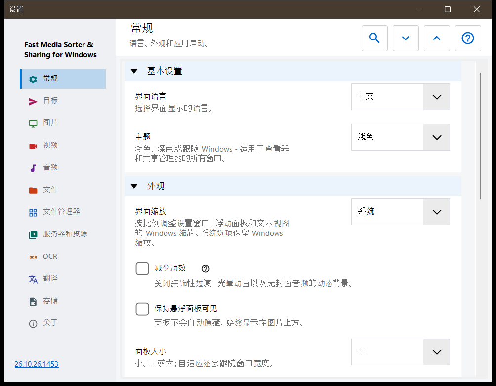
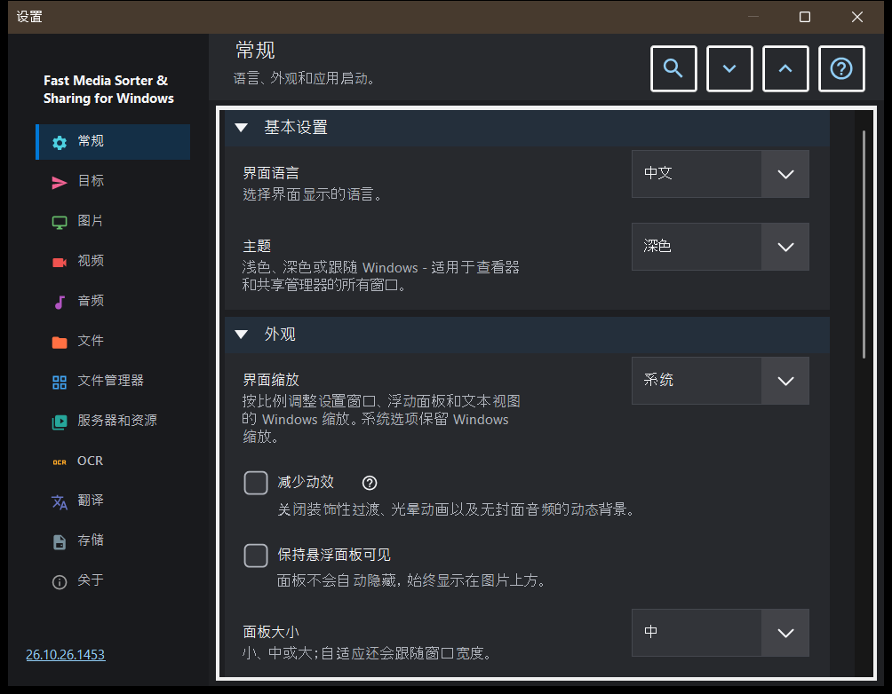

设置
设置
用途说明
「设置」窗口包含查看器的全部选项。可按 F2 打开，也可点击工具栏的「设置」按钮，或在图片面板的文件管理器中点击「设置..」按钮打开，后者会直接跳到「文件管理器」页。各页面列在左侧的边栏中，页面内的分组可以折叠。


操作顺序
- 在边栏中选择一个页面，或在「搜索设置」中输入关键词查找选项。
- 用「全部展开」和「全部折叠」展开或折叠页面中的所有分组。
- 修改需要的选项。
- 按 Esc 关闭窗口。
界面元素
常规
语言和主题（「主题」），然后是浮动面板的外观：界面缩放、减少动效、固定、大小、不透明度、圆角、图片上的信息和隐藏鼠标指针。「启动」分组决定启动时的行为（启动时打开、继续上次的文件、允许新窗口），其中的「再次显示欢迎步骤」会重新打开初始设置。「高级设置」分组可导出和导入额外设置，并恢复默认值。
目标
按键 1-9 和 0 会把文件移动到的十个文件夹；Shift 加主键盘区数字键则复制到同一个文件夹。表格中每个按键占一行：选中一行，然后使用「本机上的文件夹..」、「资源」（SFTP 或 SMB 文件夹）或「清空」，也可以把文件夹拖到该行上。「目标表格外观」分组设置显示在图片上方的表格的位置、宽度、文字大小、不透明度和可见行数，「图片上方的目标表格」则用来开启或关闭该表格。
图片
图片如何打开和显示：新图片的缩放、按 EXIF 标记自动旋转、「用滚轮缩放」、通过视频播放器播放动画图形，以及图片大小、文件大小和日期信息。「图片背景」分组设置图片周围的颜色、「透视背景」和光晕（动态、动画、速度）。「幻灯片行为」分组设置间隔、随机顺序、手动切换是否会停止放映，以及放映期间界面的行为。高级部分有高质量缩放和缩略图卡片的大小。
视频
视频文件是否参与浏览、自动播放、片段结束时的操作、记住播放位置，以及「共用声音：音频和视频」。后面的分组包含首选的音频和字幕语言以及播放控制：单击的作用、控件的延迟、暂停时的控件和三种快进快退步长。
音频
音频文件是否参与浏览、曲目结束时的操作、默认音量和静音启动。信息与控制分组包含始终可见的音频栏、无封面文件的可视化效果和睡眠定时器。
文件
文件处理：复制后前进到下一个文件、重名时以及复制或移动后的行为、文件操作时的状态栏、创建缺失的目标文件夹、「删除到回收站」和删除确认。「文件类型」分组涵盖子文件夹、扩展名、文档、文本预览大小和其他文件。后面的分组设置最近的文件和文件夹、压缩包限制以及受保护的 .fd-sec 文件。「按键与关联」分组有「键盘快捷键」按钮（打开快捷键窗口），以及图片和视频的文件关联。
文件管理器
图片面板中文件管理器的选项：「显示模式」（平铺或列表）、「内容筛选器」、隐藏文件，以及对非媒体文件的操作。「位置」分组选择显示哪些位置（本地、资源、设备），其中有「记住排序」。
服务器和资源
「服务器和网络文件夹」列表包含查看器可以浏览并用作目标的 SFTP 和 SMB 资源。「Android / SFTP」分组用于通过 SFTP 向 Android 应用发布这台电脑的文件夹；其中有连接指南和「管理面向 Android 客户端的 SFTP 服务器..」按钮。
OCR
「启用 OCR」打开文字识别，「自动运行」让它自行运行。「文字识别」分组设置源语言、质量、模式以及语言数据的下载。
翻译
选择服务（「翻译服务」）和目标语言（「翻译语言」）；其他字段包括服务地址、本地 Ollama 服务器、模型和 API 密钥。「图片上的翻译」分组设置图片上方翻译面板的不透明度和可见性。
存储
各缓存的上限，每个缓存都有清空按钮：解码后的图片、图片面板的缩略图、压缩包和网络资源。磁盘上的 OCR 缓存有「将结果缓存到磁盘」、自己的上限和清空按钮。
关于
产品信息和链接：「更新」、「重置设置」、相关项目、「程序帮助」、网站、GitHub、发布版本、隐私页面、MIT 许可证和第三方声明。「把日志发送给作者」会显示一个同意对话框，列出压缩包中包含的内容，然后把压缩包交给您的邮件程序；程序不会为此建立任何网络连接。
文档
独立于整理筛选器启用 PDF 阅读器。选择单页、连续滚动或双页，以及颜色、缩放、搜索范围和缓存上限。页面按钮切换页面，文件按钮切换文件。文本控件接收 B/N、数字和 Delete；Esc 返回画布。重置外观会保留位置和命名书签。朗读使用已安装的 Windows 语音。密码只保留在会话中。本地临时副本允许移动原文件。普通设置导出不包含阅读历史、书签和各文档的外观设置。